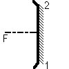
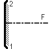

Miroir sphérique paraxial
(troué on non)

ou 
(concave ou convexe)
Définition
Il est défini par les points 1 et 2 et le foyer F (ou la focale
f'). L'ordre des points 1 et 2 est important, car il définit
quelle est la face réfléchissante, l'autre étant absorbante,
comme sur l'image ci-dessus.
Le miroir peut être ajouté:
- en cliquant sur le bouton de la barre d'outil ayant la forme ci-dessus,
puis en faisant un clic simple pour saisir le premier point, puis en faisant
un clic simple pour saisir le second (ne pas maintenir le bouton de la
souris enfoncé entre les deux points), puis un dernier clic pour
saisir la position du foyer
OU
- menu "Ajouter" puis "Système optique idéal" puis "Miroir
sphérique concave" ou "Miroir sphérique convexe". On donne
alors les coordonnées des points 1 et 2, puis la valeur de la focale.
Options
On peut imposer
-que les hachures soient tracées ou non à l'écran
- que l'axe focal soit tracé ou non
-l'épaisseur et la couleur du trait représentant le miroir
à l'écran
- la couleur du trait représentant l'axe focal à l'écran
On peut aussi choisir de trouer le miroir en son centre
(pratique par exemple pour les télescopes de type Cassegrain).
Ces propriétés peuvent être rendues accessibles:
- à la construction du miroir si on passe par le menu "Ajouter"
- à tout instant en cliquant sur le bouton "Propriétés"
de la barre d'outil, puis en cliquant sur un des cercles bleus qui apparaissent
sur l'élément dont on veut obtenir les propriétés;
ne pas oublier à la fin de cliquer sur le bouton "Fin prop." de la
barre d'outil pour quitter le mode propriétés.
Divers
Comme le miroir est représenté à l'écran par
son schéma conventionnel plan, les normales et angles ne peuvent être
affichés sur sa surface. Comme c'est une idéalisation du miroir
sphérique réel, les surfaces d'onde issues d'une source ponctuelle
ou plane ne pourront être tracées si un tel miroir fait partie
de la simulation.
Retour à la page
d'accueil